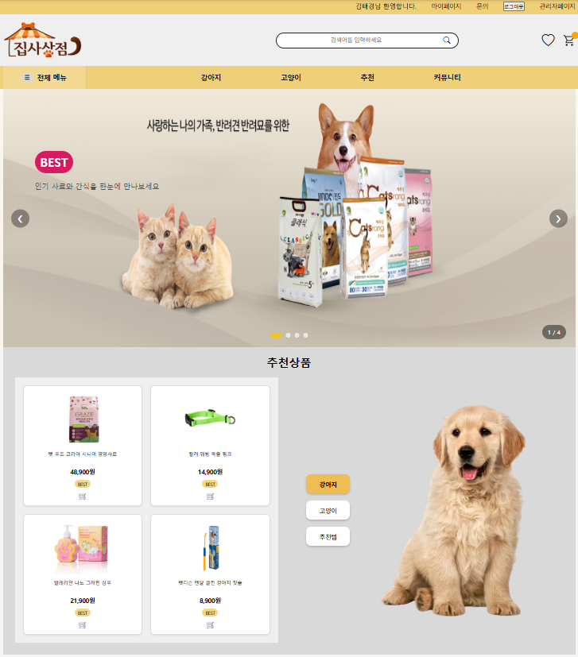

S-01
메인페이지 — 사용자 맞춤 추천 분기

🐾
jibsa-01-main.png
메인 맞춤 추천 영역
회원의 반려동물 정보(종류·연령)를 기반으로 맞춤 상품을 추천하는 기능입니다.
모든 사용자에게 같은 상품을 노출하지 않기 위해 로그인·펫 등록 여부에 따라 추천 전략을 분기했습니다. 펫 정보가 있으면 종류·연령에 맞는 판매량 상위 상품을, 없거나 비로그인 시에는 전체 인기 상품을 노출합니다.
펫 타입·연령·카테고리 조건에 따라 쿼리가 동적으로 구성되도록 설계했고, 정보가 없는 사용자에게도 빈 화면 대신 기본 추천을 제공하도록 처리했습니다.